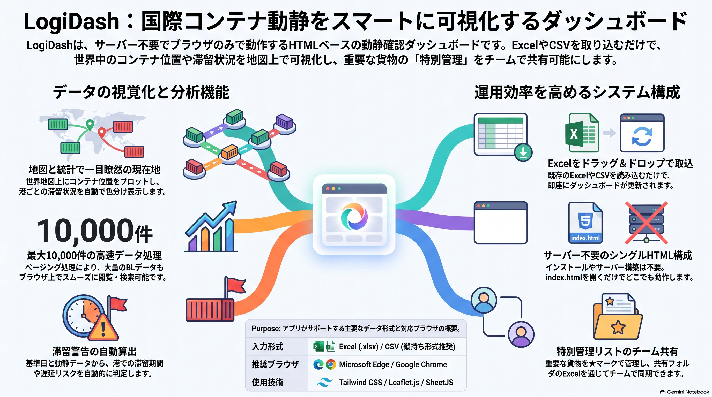

LogiDash — 国際コンテナ動静確認ダッシュボード
国際物流のコンテナ船・貨物の動静、現在地、滞留期間を地図と一覧で可視化し、重要なBLを「特別管理」として抽出・Excel出力できる、単一HTMLのダッシュボードです。

解決したい課題
- 多数のBL（船荷証券）について、今どの港にいて、どこで何日滞留しているかを一目で把握しにくい。
- 出港遅延や経由地での滞留など、注意が必要な貨物を早めに見つけたい。
- 重要なBLをチームで共有し、必要な分だけを抽出して報告に使いたい。
ツールのアプローチ
- Excel / CSV の動静データを取り込み、画面で設定した基準日から現在地・フェーズ・滞留日数を自動で算出。
- 1行 = 1BL × 1荷物の縦持ち形式で取り込み、同一BLの行は自動でマージ。列は見出し名で判定するため、列順の入れ替えにも対応。
- 特別管理の対象BLは動静データとは別の「特別管理リスト」（Excel）で管理し、共有フォルダ上でチームと共有。
- サーバー不要。
index.htmlをブラウザで開くだけで動作する単一HTML構成。
主な機能
- 地図＆サマリー：港マーカーをクリックすると、滞留中・通過予定のBL一覧と数量を表示。
- 全BL一覧：滞留3日以上を黄、7日以上を赤でハイライト（閾値は画面で変更可）。
- ★特別管理BL：一覧や地図で★を付けたBLを抽出し、船社フィルターをかけてExcel出力。
- 顧客別／荷物別集計、BLごとの詳細モーダル表示。
- 取込時の値の食い違いや解釈できない日付を警告として一覧表示（取込自体は継続）。
設計上の工夫
- 動静データに特別管理の記入を求めず、★の管理を別ファイルに分けて、データ更新と共有作業を切り離した。
- 保存前に他の人が同じリストを保存していた場合は上書きせずに知らせ、共有時の取りこぼしを防ぐ。
- 船社のETAとは別に「NUTS到着予定日」を表示専用で保持し、自動計算の結果と混同しないようにした。
- 1ページ100件のページングで描画件数を抑え、5,000件でもタブ切替が概ね500ms以内で動作。